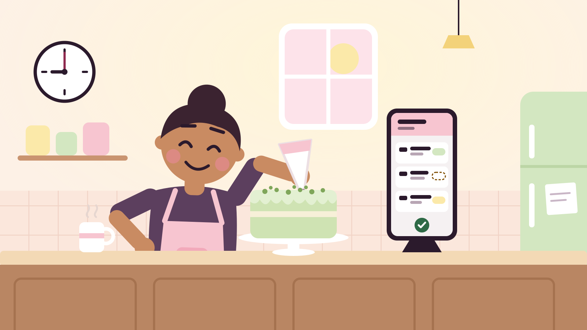
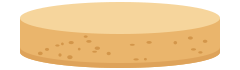
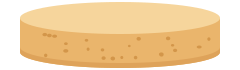
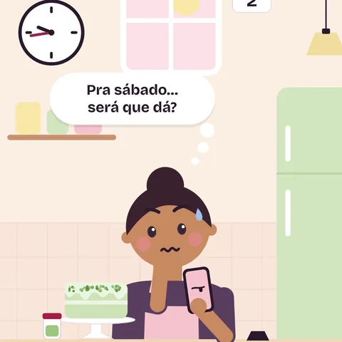
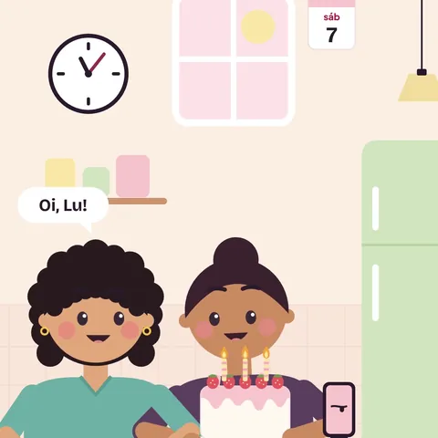
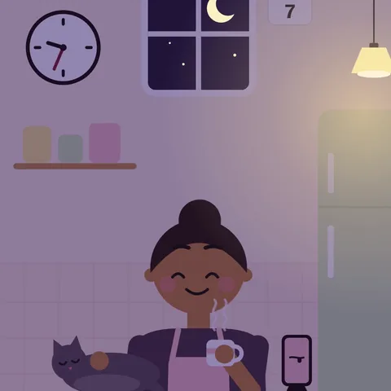

Veja quando o dia enche
Cada dia aceita até 3 pedidos. Quando lota, aparece Dia cheio.
Arraste um doce até um dia, ou toque no doce e depois no dia.
Para quem vende doces por encomenda: anote cada pedido, veja quando o dia enche e saiba quanto falta receber. Suas clientes também podem pedir por um link. Tudo no celular.

O que, quando, quem e quanto: fica tudo no pedido, e não no caderno.

QuandoSábado, 11h
QuantoR$ 150, sinal conferido


O vídeo mostra, com textos na tela: Essa é a Lu. Ela faz bolos e doces por encomenda. Segunda de manhã, chega um pedido pelo link, e ela pensa: pra sábado, será que dá? A agenda mostra que sábado ainda tem vaga. Ela aceita com um toque. Caiu o sinal? Ela toca em Recebi, e o app faz a conta. A semana vai passando. Sábado, 11h: bolo pronto. A Camila veio buscar. Recebeu o resto: pago e entregue. Sábado à noite: agenda em dia, Lu tranquila. Doce Agenda: sua semana de encomendas, sem susto. Grátis, sem cartão, nada para instalar.
Cada dia aceita até 3 pedidos. Quando lota, aparece Dia cheio.
Arraste um doce até um dia, ou toque no doce e depois no dia.
Marque o que entrou e veja quanto ainda falta.
Falta receberR$ 270
Mande o link no WhatsApp ou deixe na bio do Instagram. A cliente faz o pedido sozinha, sem baixar nada, e você não precisa copiar a conversa.
Nenhum pagamento é pedido pelo link. Nada é confirmado sem você.
Como a cliente vê

 Bolo de aniversárioa partir de R$ 150
Bolo de aniversárioa partir de R$ 150 Brigadeiroa partir de R$ 170
Para quando?
sex 23sáb 24seg 26ter 27
Seu nome
Camila
Brigadeiroa partir de R$ 170
Para quando?
sex 23sáb 24seg 26ter 27
Seu nome
Camila
Como chega para você
Nada. O Doce Agenda é um projeto acadêmico e gratuito, sem cartão.
Você pode baixar uma cópia de todos os seus pedidos quando quiser. E, se um dia o Doce Agenda for encerrado, você será avisada com antecedência para guardar tudo.
Não. Abra pelo navegador do celular, entre com sua conta e pronto.
Não. Ela abre o link, escolhe o doce e a data, e você revisa antes de confirmar.
Com o app aberto, aparece um aviso quando chega um pedido. Com o app fechado, o pedido espera no aviso do topo da Agenda.
Só neste aparelho, enquanto você não limpar o navegador. Para guardar de verdade, crie sua conta grátis.